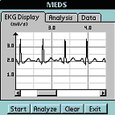
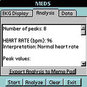
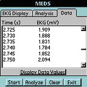

Modular Electrocardiogram Detection System:
Modular Electrocardiogram Detection System (MEDS) Prototype ECG analysis program for analyzing 3-lead ECGs acquired via a LabPro data collection unit that directly connects these leads to the serial port of a personal digital assistant. The program displays ECG data on screen, performs measurements of recorded cardiac signals and provides interpretations of these ECG waveforms using classic interpretation criteria for both rhythm and morphology. The program can also database the retrieved waveforms and export analysis. (See screenshots below)   
The program runs on Palm and Visor handhelds and can also be deployed on Windows CE systems. These screenshots are from a Visor Prism handheld with a color screen. They depict the ECG graphing display, which allows users to zoom in and out in order to visually inspect the waveform; the analysis tab (the results displayed in this tab can be exported to the Palms memo pad and hotsynced directly into an e-mail to a physician); and the data tab which displays the specific data values of the waveform. A user can use the Stylus (pen) of the PDA to select within the ECG graphing space and retrieve specific data values or peak heights and durations. The program thus allows for automated analysis as well as facilitated interactive manual analysis of ECGs.